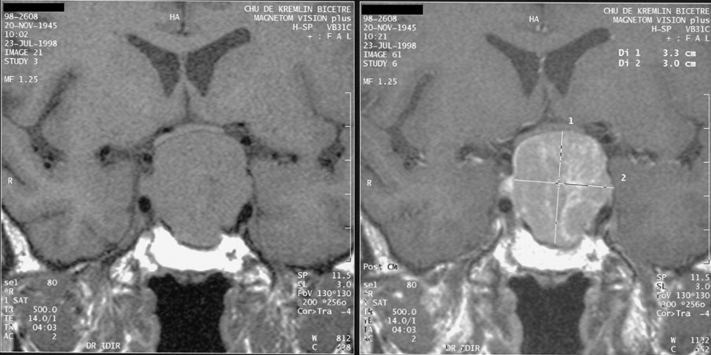

Ficha del catálogo
Macroadenoma hipofisario
- Sistema
- Nervioso
- Modalidad
- RM
- Región
- Silla turca y región supraselar
- Dificultad
- Intermedio
El macroadenoma hipofisario es un tumor benigno de la adenohipófisis que supera el centímetro de diámetro. Puede ser funcionante y producir un síndrome endocrino característico o no funcionante y manifestarse por efecto de masa, con alteración campimétrica por compresión del quiasma óptico y cefalea.
Técnica
Resonancia magnética de región selar con cortes finos coronales y sagitales potenciados en T1 y T2 antes y después del contraste. El estudio dinámico con contraste es especialmente útil cuando se busca una lesión pequeña productora de hormonas.
Qué observar
- Masa que ensancha la silla turca y adelgaza su suelo
- Morfología en ocho por el estrechamiento a la altura del diafragma selar
- Extensión supraselar y grado de contacto o elevación del quiasma óptico
- Invasión del seno cavernoso y englobamiento de la arteria carótida
- Áreas quísticas, necróticas o hemorrágicas dentro del tumor
- Desplazamiento del tallo hipofisario y de la glándula normal residual
Hallazgos
Masa de origen intraselar con crecimiento hacia arriba que adopta forma de ocho o de muñeco de nieve al atravesar el diafragma selar, isointensa o discretamente heterogénea en T1 y T2, con realce que suele ser menos intenso y más tardío que el de la glándula normal. El suelo selar aparece remodelado y adelgazado. La extensión lateral puede rodear la arteria carótida intracavernosa, dato que se valora en cortes coronales y que condiciona la resecabilidad.
Perlas
La relación del tumor con el quiasma óptico y el grado de englobamiento de la carótida en el seno cavernoso son los dos datos que más influyen en la decisión terapéutica, por lo que deben describirse siempre en el informe. Un cambio brusco de señal con hemorragia y crecimiento rápido en un paciente con cefalea intensa y déficit visual agudo indica apoplejía y constituye una urgencia.
Diagnóstico diferencial
- Meningioma del tubérculo selar
- Se origina por encima de la silla, con base dural, cola dural, realce homogéneo intenso e hiperostosis, y la silla no está ensanchada.
- Craneofaringioma
- Predominio supraselar con componente quístico y calcificaciones, más frecuente en niños y en adultos mayores.
- Aneurisma de la carótida intracavernosa o supraclinoidea
- Presenta vacío de flujo, artefacto de pulsatilidad y relleno en las secuencias angiográficas.
- Hipofisitis
- Aumento glandular simétrico con engrosamiento del tallo y realce homogéneo, en contexto clínico compatible.
Simuladores
- Hiperplasia hipofisaria fisiológica del embarazo y de la adolescencia
- Quiste de la bolsa de Rathke de gran tamaño
- Realce heterogéneo por artefacto de susceptibilidad del seno esfenoidal
Por modalidad
- TC
- Define la anatomía ósea de la silla y del seno esfenoidal para el abordaje transesfenoidal y detecta calcificaciones.
- RM
- Es la técnica de elección para caracterizar la lesión, su extensión y su relación con quiasma, senos cavernosos y carótidas.
Protocolo
Cortes coronales y sagitales finos T1 y T2 centrados en la silla, estudio dinámico tras contraste y series tardías; conviene incluir una valoración del resto del encéfalo y repetir el mismo protocolo en los controles posquirúrgicos.
Clasificación
La extensión lateral hacia el seno cavernoso se gradúa según la relación del tumor con las líneas trazadas entre los segmentos intracavernoso y supraclinoideo de la arteria carótida interna, de modo que el englobamiento completo del vaso indica invasión y predice resección incompleta.
Errores frecuentes
- No valorar la relación con el quiasma óptico en el plano coronal
- Confundir un aneurisma con un tumor por no revisar secuencias vasculares
- Informar solo el tamaño sin describir la invasión del seno cavernoso

macroadenoma hipófisis silla turca quiasma óptico seno cavernoso resonancia selar